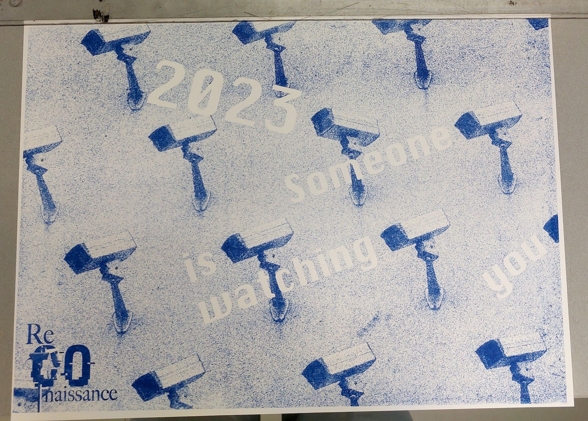
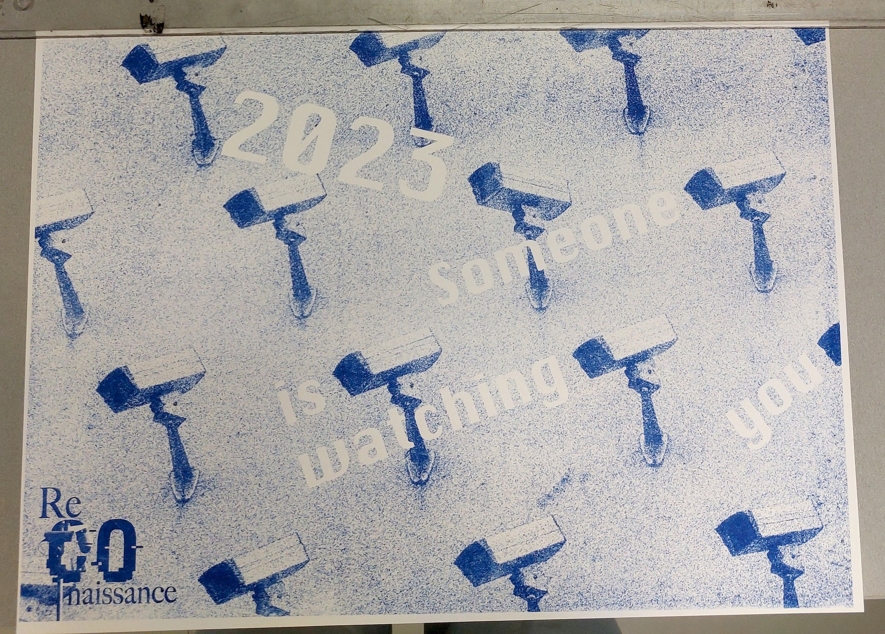

Urgence - fanzine
Workshop avec Hadrien Herzog sur le thème de l'urgence. Il s'agissait de réaliser un fanzine par équipe de 3, en 4 jours et rendant compte du caractère urgent des articles à mettre en forme. Nous avons choisi le thème de la surveillance qui à donnée naissance au nom de ReConnaissance, le fanzine est imprimé en risographie.
 
